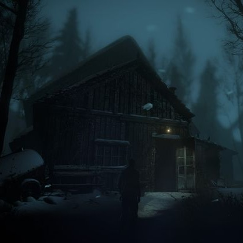
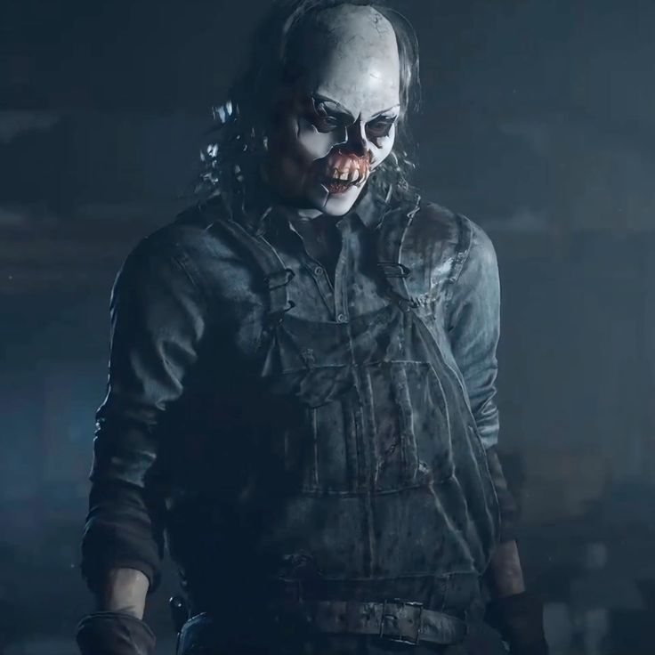
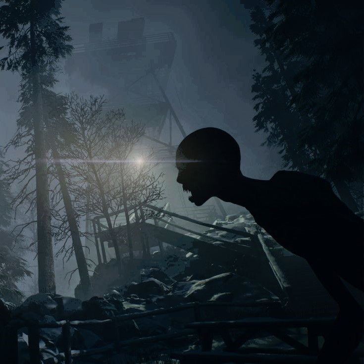

UNTIL DAWN 
Blackwood Mountain’s lodge, standing high at the summit, looked from the outside like a warm, wealthy, peaceful vacation home. Buried in a forest of snow, far from the city and far from the noise, it seemed like the perfect refuge. But in a single night, it would become the place that changed the lives of eight young people forever.
It all began during the Washington family’s winter party. The house was full of laughter, music, drinking, and flirtation. Among the guests was someone more fragile than the others, someone no one truly noticed that night: Hannah Washington. Hannah had feelings for the group’s popular boy, Mike, and the others knew it. Especially Jessica and Emily. To them, it seemed like harmless fun, so they decided to turn her feelings into a cruel joke.

Mike secretly asked Hannah to meet him in his room. Hannah accepted with excitement, believing that perhaps the boy she liked was finally going to confess something real. When she entered the room, Mike was waiting beside the bed. Nervous but happy, Hannah stepped closer to him.
Then the closet doors burst open. The curtains were thrown aside. Everyone who had been hiding jumped out laughing. They mocked her openly, and Hannah stood there half-dressed, humiliated in front of them all. Tears filled her eyes, and she ran from the room in shame.
Only her twin sister Beth ran after her.

Outside, a blizzard raged across the mountain. Snow swallowed the paths, and the wind screamed through the trees. Beth found Hannah deep in the woods, still crying, but they quickly realized they were not alone. Something was watching them from between the trees—something fast like a human, but not human at all.
The sisters ran through the darkness until they reached the edge of a cliff. Behind them came the sound of the creature closing in. Beth grabbed Hannah’s hand as the two of them dangled over the ledge, fighting to hold on. Then Beth’s grip slipped.
Their screams echoed through the mountain, and then there was silence.
The two sisters vanished. Their bodies were never found, and after that night nothing was ever the same again.
A year passed. The Washington family had fallen apart, and the lodge had been closed ever since. But Josh Washington—the brother who had lost both sisters, the boy who smiled on the outside while breaking on the inside—invited everyone back to the mountain. He said he wanted them together again. Maybe for closure. Maybe to face the past. Maybe simply to reunite.
So they came.
When Sam stepped off the cable car, there was already something uneasy in the air. Mike arrived with his new girlfriend Jessica. Emily and Matt’s relationship was tense, while old feelings still lingered between Emily and Mike. Ashley and Chris shared an awkward closeness they never fully admitted. Everyone laughed, joked, and tried to act normal, yet guilt still hung in the air like frost.
No one truly spoke about Hannah.
Josh welcomed them with a bright smile. He joked, laughed, and seemed cheerful enough, but behind his eyes something was wrong.
As the night deepened, the group began to split apart. Mike and Jessica walked down the snowy path to a guest cabin so they could be alone. Strange sounds moved through the woods around them, but Jessica dismissed it while Mike tried to calm her. They finally reached the cabin and stepped inside.
Just as things began to settle, the window exploded inward.
A monstrous force reached through the darkness, seized Jessica, and dragged her screaming into the night. Mike froze in shock for only a moment before shouting her name and running after her into the forest.
Back at the main lodge, things became worse. Doors slammed shut on their own, shadows moved through empty rooms, and it felt as if someone was watching from inside the house itself. Fear spread quickly as everyone realized they were no longer safe.
Chris and Ashley were abducted by a masked man. When they awoke, they found themselves trapped in a grotesque machine, while Josh appeared to be caught in another device nearby. The masked figure handed Chris a gun and forced him to choose: shoot Ashley, or shoot Josh.
Everything had become a nightmare.

Sam was stalked through the bathhouse. Emily and Matt found themselves in mortal danger at the cable station. One by one, the group was scattered across the mountain, isolated and terrified. No one knew who to trust anymore.
There was only one certainty: a killer was among them.
But the truth was stranger than any of them imagined.
When the masked man was finally caught, the face beneath the mask shocked everyone.
It was Josh.
He had planned everything—the cameras, the traps, the fake corpses, the elaborate machinery, every staged horror they had suffered. He wanted revenge for what had been done to his sisters. He wanted to terrify them, force them to feel guilt, and break them psychologically.
But Josh himself was not well. Trauma, grief, medication, and isolation had shattered his mind.Yet even then, everyone realized something worse.
Josh’s game had only been a game.
The real monster was outside.

The old stranger carrying the flamethrower—the man everyone first believed was the threat—finally revealed the truth. Blackwood Mountain was cursed. Years earlier, a mining disaster had trapped workers beneath the mountain. Starving and desperate, they turned on one another and consumed human flesh.
Those who did were no longer human.
They became Wendigos—fast, savage, merciless creatures that hunted anything that moved.
And one of them was more familiar than the rest.
Hannah had never died.
After the fall, she survived in the caves beneath the mountain. Alone in darkness, starving and slowly losing her mind, she endured for days until desperation drove her to eat the body of her dead sister Beth. That was the moment the curse took hold.
Hannah was no longer Hannah.
The creature stalking the mountain, the thing that dragged Jessica away, hunted Mike, and tore through the shadows… it was her.
By the time the truth was known, it was already too late. The group had been torn apart. Some were dead, some were wounded, and some were close to madness.
The survivors gathered one final time inside the lodge. Outside, monsters circled through the snow. Inside, there was only fear, exhaustion, and desperation.
The plan was simple: Survive Until Dawn.
When the Wendigo entered the lodge, everyone held their breath. The creatures hunted movement, and one wrong motion would mean death. Sam, Mike, and the others stood frozen like statues while the creature prowled through the room, snarling, its face still carrying traces of the girl it once had been.
Then, in the final moment, the gas line ignited.
The lodge exploded, and flames tore through the night.The shockwave threw everyone into chaos, breaking the fragile silence they had been holding onto. For a brief second, everything was swallowed by fire, smoke, and the sound of collapsing wood.

When morning came, rescue teams reached the mountain. Ambulance lights flashed across the snow while the survivors sat wrapped in blankets, giving statements with hollow eyes and frozen expressions.
None of them were the same anymore.
Because a small, cruel prank one year earlier had ended by devouring them all.
The story of Until Dawn is not truly about monsters. It is about people—about cruelty, guilt, and how trauma can transform someone into something unrecognizable. The creatures on the mountain are terrifying, but what created them was human cruelty.